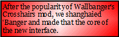

Hoy, chumbuckets! It's been a barghest's age since our last big update, but the iAtropos team havefinally finished the major revamp of our decking UI that's been underway for the last umpteen months.
So now you're lookin' at it!
The interface has been streamlined and simplified, with lots of stuff moved into config files (mostly written in ASL and Haskell, don't ask). So here's a quick tour.
On your left is a knob; swipe it up or down, or just tap it, to bring the tool wheel into view. Swipe or tap on the names of the tools to move from one to the next. For now, just spin to everybody's fave analysis tool - Sniffer. (Version 2.49b comes loaded by default, but you can switch to the 3.x series, or to Narker / BugYz / Tisiphone, later).
Beside the name of the tool there's a targeting reticle. You'll use the reticle for just about everything when you're using Sniffer or one of the icebreakers. Tap or drag the Sniffer reticle to make it active.
Move Sniffer over a target site to locate vulnerabilities of various kinds. Using Sniffer, it may take a little while and some intuition on your part, but if there are any holes there to find, you'll find 'em. We've switched to the ALang "Fingerprint" identification scheme for weak spots in corporate ice - that's the little square icons you might have seen around. The 'print encodes everything worth knowing about the vulnerability into a format readable by each tool of the icebreaker suite.
Let go of Sniffer for a sec and swipe left on the main page. As you can see if you actually did it, we've gathered up the site metadata, security information, decompiled sitecode, yadda yadda. Basically, if it's Sniffable, it'll show up either on the front face of the site, or somewhere in the guts exposed on the back face. I'm sure someone will make a BTL tutorial for any derpheads who can't figure out how to swipe back and forth to get at both kinds of info.
Once you find a breach point and you want to attack it, you have three big ways to get through. First, you can spin up one of the other 'breakers on your system and use it according to its own rules. More on those in their own sections. Second, you can jump in and code your own on the fly. (We are not registering any opinions on the debate over whether this is the way the true pros do it, or whether it's like throwing away all the work done on the various icebreakers and reinventing the transistor. The option's there, use it or don't.) Third, if you {XXX} you'll bring up the 'netspace' where all your social networking tools and dreck live. We've installed the latest version of the Baksheesh client so you should be able to just drag a fingerprint over to this region to either bounce it off one of your contacts asking for a back door key, or farm it out with a bounty to see if some stranger's already cracked it.